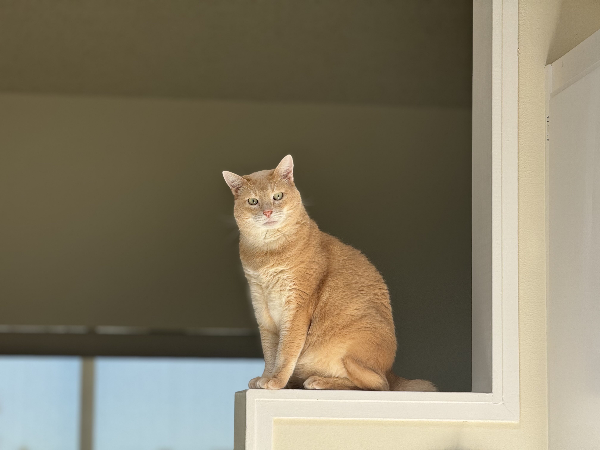
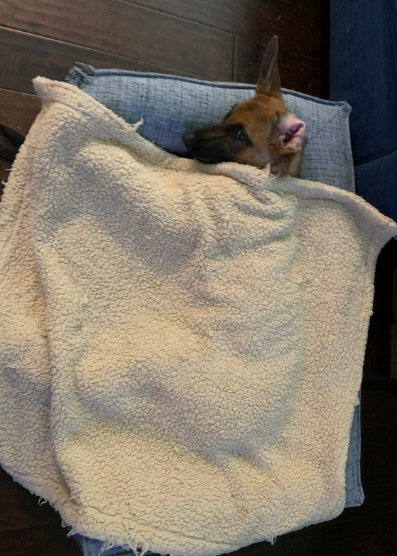

Hello World
Introductions
Hello! My name is Nikolas. I am a third year Computer Science student. I am from the Bay Area, and enjoy doing things like kayaking, going to the gym, and going on walks outside. Because I do not have too much experience in HTML/CSS and none in JavaScript, I am excited to take this class, as I have been wanting to learn JS for a while now. A fun fact about me is that I have a cat named Simba, who is 7 years old.
My partner's name is Karan. He is a fourth year Business Management student.
Cool Pet Photos
Challenge
The challenge of this lab was to create a webpage using HTML and CSS, and to get acquainted with them.
Problems
I had some trouble with getting the images centered, but a tutorial from W3Schools helped.
Reflection
I thought that this assignment was a good introduction to HTML and CSS, as it was pretty straightforward.